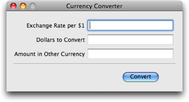

2009年 8月 改訂
Cocoa が 高度に動的で、再定義可能であり、しかも、オープンなオブジェクトモデルの上に構築されているという事実について、Objective-C に感謝しよう。 とりわけ、オブジェクトグラフエディタ、ランタイムモニタリングツール、オブジェクトブラウザ、等々その他数多くの Cocoa ランタイムの能力を利用するプログラムの作成が可能なのは、この事実のお陰なのである。 Cocoa のオープン性の一つの重要な応用は、スクリプティング言語と Cocoa の統合だが、これは非常に役に立つ。 というのは、この統合によって、Cocoa を対話的に使うことが可能になり、複数の Cocoa コンポーネントを容易に結合して使うことが可能になるからだ。
この記事では、Cocoa スクリプティングとはどのようなものか、その感触をお伝えしたい。また、どんなレベルの統合が期待できるのかについても示したい。 我々は、Cocoa 専用のオープンソーススクリプト言語 F-Script を使って、小さなグラフィカルアプリケーションを創る。 グラフィカルユーザーインタフェースを作る為の Cocoa オブジェクトフレームワークである Application Kit を使って、F-Script で直接プログラムしていくのだ。 この種のアプリケーションはインタフェースビルダーを使って作ることもできるが、 この記事では、Cocoa スクリプティングを解説する為に、Application Kit をプログラム的に使っていくことに注意されたい。
F-Script は http://www.fscript.org からダウンロードできる。
注記：この記事は、O'Reilly MacDevcenter の記事 Scripting Cocoa with F-Script の改訂版である。
これから作るアプリケーションは、 アップル チュートリアル にあるものとそっくりな「カレンシーコンバータ」（通貨換算器）だ。
F-Script と Cocoa を使って、これから作る カレンシーコンバータ
F-Script は、Smalltalk に似た構文とコンセプトを持つ、純粋にオブジェクト指向のスクリプト言語である。 読者は、FScript.app アプリケーションが提供する対話的なシェルに命令を入力することによって F-Script と対話することができる。
F-Script 構文に関する幾つかのポイント：
:=
は 代入を意味する
'A string'
"A comment"
(125<>513 extent:383<>175) は四角形を意味する。これは Objective-C における NSMakeRect(125, 513, 383, 175) と等価である。
以下のスクリプトを F-Script シェルに入力するには、単にコピー／ペーストしても良いが、少しずつ命令を入力していってもよい： そうすれば、このカレンシーコンバータのユーザーインタフェースが、少しずつ姿を現してくる様子を見ることができるだろう。 もちろん、スクリプト中のさまざまな引数の値を変更してみたり、命令をいくつか省いてみたりして、何が起こるかを見てみることもできる。 カレンシーコンバータが完成した後に、各オブジェクトを対話的に操作することさえできるのだ。
"F-SCRIPT CURRENCY CONVERTER (VERSION 1)"
"ウィンドウを初期化して、必要な種設定を行う"
window := NSWindow alloc initWithContentRect:(125<>513 extent:383<>175)
styleMask:NSTitledWindowMask +
NSClosableWindowMask +
NSMiniaturizableWindowMask
backing:NSBackingStoreBuffered
defer:NO.
"ウィンドウを画面に表示する"
window orderFront:nil.
"ウィンドウのタイトルを設定する"
window setTitle:'Currency Converter'.
"NSForm オブジェクトをインスタンス化する"
form := NSForm alloc initWithFrame:(15<>70 extent:348<>85).
"フォームをウィンドウ内に配置する"
window contentView addSubview:form.
"フォームに各種設定を行う"
form addEntry:'Exchange Rate per $1'.
form addEntry:'Dollars to Convert'.
form addEntry:'Amount in Other Currency'.
form setInterlineSpacing:9.
form setAutosizesCells:YES.
"装飾線をインスタンス化してウィンドウ内に配置する"
line := NSBox alloc initWithFrame:(15<>59 extent:353<>2).
window contentView addSubview:line.
"ボタンをインスタンス化してウィンドウ内に配置し、ボタンに各種設定を行う"
button := NSButton alloc initWithFrame:(247<>15 extent:90<>30).
window contentView addSubview:button.
button setBezelStyle:NSRoundedBezelStyle.
button setTitle:'Convert'.
button setKeyEquivalent:'\r'.
"通貨換算の計算を行うスクリプトを生成する"
conversionScript := [
(form cellAtIndex:2) setStringValue:(form cellAtIndex:0) floatValue * (form cellAtIndex:1) floatValue
].
"そのスクリプトをフォームのターゲットにする。
ユーザーがリターンキーを押すと、スクリプトが評価される"
form setTarget:conversionScript.
form setAction:#value.
"そのスクリプトをボタンのターゲットにする。
ユーザーがボタンを押すと、スクリプトが評価される"
button setTarget:conversionScript.
button setAction:#value.
いくつかの興味深い事柄を、以下に書き留めておこう：
[ と ] は使わない。
この類似は驚くべきことではない。というのは、Objective-C のメッセージ送信の構文は、Smalltalk から借りてきたものだからだ。
NSWindow、NSForm、NSButton そして、NSBox は、Cocoa のクラスである。
NSTitledWindowMask、NSClosableWindowMask や NSRoundedBezelStyle は、Cocoa で定義されているシンボル名である。
alloc、initWithFrame:、setTitle: 等々のようなメソッドは、Cocoa フレームワークの一部である。
実際の通貨換算は、以下の命令を使って生成されるオブジェクトによって計算される：
conversionScript := [
(form cellAtIndex:2) setStringValue:(form cellAtIndex:0) floatValue * (form cellAtIndex:1) floatValue
].
[...] という記法は、後で実行可能なひと纏まりのコードを表す Block クラスのオブジェクトを生成する。
（Block は F-Script framework で提供される Objective-C クラスである）
上のブロックの中では、ユーザーインタフェースオブジェクトの持つフィールドの値を取り出して、計算（単純なかけ算を含む）を実行して、ある UI 要素に、その結果を置いているだけである。
このコードでは更に、上のブロックが、フォームとボタンオブジェクトのターゲットになっている。 こうして、ユーザーが、リターンキーを押すか、ボタンをクリックすると、このブロックが評価されることになる。
カレンシーコンバータの第二版を以下に示そう。 このスクリプトは、以前のものより短くなっているが、それは、第一版では単純化の為に使うのを避けた F-Script の賢い機能をいくつか使っているからだ。 また、（コード自体に語らせることにして）いくつかのコメントを削除して、ほんの少しだがプログラムを再編成してもいる： 今度は、事前にユーザーインタフェースを全て作り上げ、必要な設定も全て済ませてから、画面に表示させている。
"F-SCRIPT CURRENCY CONVERTER (VERSION 2)"
"ウィンドウを初期化して、必要な設定を行う"
window := NSWindow alloc initWithContentRect:(125<>513 extent:383<>175)
styleMask:NSTitledWindowMask +
NSClosableWindowMask +
NSMiniaturizableWindowMask
backing:NSBackingStoreBuffered
defer:NO.
"通貨換算の計算を行うスクリプトを生成する"
conversionScript := [
(form cellAtIndex:2) setStringValue:(form cellAtIndex:0) floatValue * (form cellAtIndex:1) floatValue
].
"フォームをインスタンス化して、構成を組上げる"
form := NSForm alloc initWithFrame:(15<>70 extent:348<>85).
form addEntry:@{'Exchange Rate per $1', 'Dollars to Convert', 'Amount in Other Currency'}.
form setInterlineSpacing:9; setAutosizesCells:YES; setTarget:conversionScript; setAction:#value.
"ボタンをインスタンス化して、構成を組上げる"
button := NSButton alloc initWithFrame:(247<>15 extent:90<>30).
button setBezelStyle:NSRoundedBezelStyle; setTitle:'Convert'; setTarget:conversionScript;
setAction:#value; setKeyEquivalent:'\r'.
"装飾線をインスタンス化して、構成を組上げる"
line := NSBox alloc initWithFrame:(15<>59 extent:353<>2).
"各コンポーネントをウィンドウの中に配置して、そのウィンドウを画面に表示する"
window contentView addSubview:@{form, button, line}.
window setTitle:'Currency Converter'; orderFront:nil.
このバージョンで新たに使ったものの一つが、メッセージを続けて送る為の「;」記法である。 この記法を使うと、毎回レシーバを指定し直さなくとも、単一のレシーバに対して、いくつもメッセージを送ることができる。
もう一つ興味深いのは、次の命令だ：
form addEntry:@{'Exchange Rate per $1', 'Dollars to Convert', 'Amount in Other Currency'}.
F-Script の革新的な特徴の一つは、特にオブジェクトのコレクションを扱える様には設計されていないメソッドを使ったとしても、オブジェクトの集まりの全体を一度に操作できることだ。
（実際、F-Script は、Cocoa オブジェクトに対して直接使える完全なオブジェクトクエリ言語を提供している。）
この命令が、まさにその場合で、ここでは、フォームに対して、入力項目のリスト全体を一度に追加している。
ここでは、潜在的に複雑な一群のメッセージ送信を指定できる様にしてくれる「メッセージングパターン」記法（「@」で表される）を使っている。
メッセージングパターンは、ふつう、一つまたは複数のオブジェクトコレクションを含んでいる。
この例では、「{」と「}」で表される文字列配列を使っている。この命令を実行すると、それをきっかけに、以下の三つのメッセージ送信が生成される：
form addEntry:'Exchange Rate per $1'form addEntry:'Dollars to Convert'form addEntry:'Amount in Other Currency'次の命令でもまた、同じパターンが使われており、ここでは、複数のビューを、まとめて一度にウィンドウに配置している。
window contentView addSubview:@{form, button, line}.
これまでの例では、比較的単純なパターンを使っていたが、F-Script は、更に複雑なメッセージングパターンを表現できる様にする為の構文も提供している。
F-Script は、Objective-C の自動ガベージコレクションと共に使えるよう設計されている。
もしF-Script を、参照カウントモードで動かす場合は、生成した様々な Cocoa オブジェクトが使われなくなったら破壊されることを保証する為に、いくつかの付加的な呼び出しを追加しなければならない。
明確に言えば、フォームを生成する式、ボタンを生成する式、線を生成する式に対して、autorelease メッセージ送信を追加しなければならない。
そうすると、例えばフォームを生成する式は、こうなる：
form := (NSForm alloc initWithFrame:(15<>70 extent:348<>85)) autorelease.
参照カウントモードでは、オブジェクトをスクリプトのグローバル変数やローカル変数に代入する時に、F-Script が自動的に、それを保持し、その変数に別のオブジェクトが再代入された時に、
それを解放してくれる。だから、この場合は、明示的に retain 呼び出しを追加する必要は無い。
現状のままでは、我々のスクリプトには、全くモジュラー性がない： それは、実行する為に F-Script コンソールにペーストした、グローバル変数を使った命令の寄せ集めに過ぎない。 次のバージョンでは、モジュラー性を導入する：
"F-SCRIPT CURRENCY CONVERTER (VERSION 3)"
converter := [:title | |window conversionScript form button line|
"ウィンドウを初期化して、構成を組上げる"
window := NSWindow alloc initWithContentRect:(125<>513 extent:383<>175)
styleMask:NSTitledWindowMask +
NSClosableWindowMask +
NSMiniaturizableWindowMask
backing:NSBackingStoreBuffered
defer:NO.
"通貨換算の計算を行うスクリプトを生成する"
conversionScript := [
(form cellAtIndex:2) setStringValue:(form cellAtIndex:0) floatValue * (form cellAtIndex:1) floatValue
].
"フォームをインスタンス化して、構成を組上げる"
form := NSForm alloc initWithFrame:(15<>70 extent:348<>85).
form addEntry:@{'Exchange Rate per $1', 'Dollars to Convert', 'Amount in Other Currency'}.
form setInterlineSpacing:9; setAutosizesCells:YES; setTarget:conversionScript; setAction:#value.
"ボタンをインスタンス化して、構成を組上げる"
button := NSButton alloc initWithFrame:(247<>15 extent:90<>30).
button setBezelStyle:NSRoundedBezelStyle; setTitle:'Convert'; setTarget:conversionScript;
setAction:#value; setKeyEquivalent:'\r'.
"装飾線をインスタンス化して、構成を組上げる"
line := NSBox alloc initWithFrame:(15<>59 extent:353<>2).
"各コンポーネントをウィンドウの中に配置し、そのウィンドウを画面に表示する"
window contentView addSubview:@{form, button, line}.
window setTitle:'Currency Converter'; orderFront:nil.
]
今回のバージョンでは、F-Script インタープリタにブロックオブジェクトを生成させる為に、命令群を [ と ] の間に置く。
また、スクリプトの最初の行で、引数とローカル変数を宣言する。最後に、我々のスクリプトを表すこのブロックオブジェクトに、「converter」という名前を付ける。
ブロックは、自分の外部の変数にアクセスできるばかりでなく、任意の数の引数を取ることができ、任意の数のローカル変数を持つことができる。
さあ、今度は、必要な引数を忘れずに与えて「value」メッセージを送信すれば、我々のスクリプトを起動できるのだ。 例えば：
converter value:'My Great Converter'
これを起動する度に、新しく、全機能を備えたカレンシーコンバータが創られて、画面に表示される。
我々のスクリプトは、今やブロックオブジェクトなのであるから、それを他のあらゆるオブジェクトと同じ様に扱うことができる：
コレクションの要素にもできるし、引数として、メソッドに渡すこともできるし、ディスク上にアーカイブすることもできる、等々。
特にブロックを扱うために備えられたツールがいくつかあるが、グラフィカルコードエディタは、その一つだ。
このブロックに、inspect メッセージを送れば、それを開くことができる。
converter inspect
最後になるが、F-Script は、どんな Cocoa アプリケーションにでも埋め込めるフレームワークの形式でも提供されているので、 標準的な Mac OS X アプリケーションの中に、読者のスクリプトを簡単に埋め込むことができる。
［訳注］この話題の詳細については
「Cocoa アプリケーションに F-Script を埋め込む」を参照。
これまで Cocoa スクリプティングとはどのようなものかを見てきた。 明らかに、Cocoa の例外の扱い方、インタフェースビルダーとの統合の方法、カスタム Objective-C クラスの使い方や、 非オブジェクト型が、F-Script オブジェクトにどのようにマッピングされるのか、等々、この記事では議論されていないテーマがまだたくさんある。 しかし、読者は、それらの側面についても非常に高いレベルで統合がなされていると期待して良い。
Copyright © 2006-2009 Philippe Mougin
Translation-ja © 2012 Hideo Haga［日本語版］